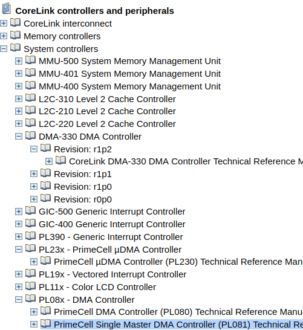

DMA Introduction¶
intro & reference
一個解釋 DMA 的故事: 瞭解 DMA (Direct Memory Access)
DMA 分為兩個種類
standard DMA (DMA Controller): 有 central 的 DMA Controller, DMA Controller 會提供 control register 來讓 CPU 進行讀寫, 用於指定 DMA copy 的記憶體位址.
bus mastering: CPU 跟每個 peripherals 都可以被授權來控制 memory bus. 因此 peripheral 能直接成為 bus master, 就能直接對 memory 進行讀寫.
DMA Controller Example
早期的(198x) IBM PC 使用 Intel 8237 作為 DMA controller.
Some Intel Xeon processor provide an embedded DMA controller called I/OAT.
Bus Mastering Example
PCI bus
AMBA AHB bus
DMA on ARM platform¶
DMA in ARM bus system(AMBA)¶
high-end (Cortex-A, Cortex-R)
DMA-330 Controllers (PL330, PrimeCell, CoreLink)
both high-end, high-performance AXI systems
AMBA-AXI protocol
AMBA-compatible peripheral
low-end (Cortex-M, ARM9)
AMBA-AHB protocol
DMA Controller: PL230, PL080, PL081
AMBA AHB system support bus mastering DMA
ARM specs:

linux kernel driver:
include/linux/amba/bus.h include/linux/amba/pl330.h drivers/dma/pl330.c include/linux/amba/pl080.h
reference
AMBA bus¶
version
AMBA v1: Advanced System Bus (ASB) and Advanced Peripheral Bus (APB)
AMBA v2: AMBA High-performance Bus (AHB) that is a single clock-edge protocol.
AMBA v3
AXI: higher performance interconnect. (than AHB?)
ATB(Advanced Trace Bus): part of the CoreSight on-chip debug and trace solution
AMBA v4: AXI4, ACE: system wide coherency.
AMBA v5: CHI (Coherent Hub Interface): re-designed high-speed transport layer and features designed to reduce congestion.
thus, in version 5
bus protocol: AXI/AHB for high/low-end
cache coherence: AMBA5 CHI, AMBA 4 ACE
trace/debug: ATB
ref
wiki: https://en.wikipedia.org/wiki/Advanced_Microcontroller_Bus_Architecture
ARM Announces AMBA 5 CHI Specification: www.arm.com/about/newsroom/arm-announces-amba-5-chi-specification-to-enable-high-performance-highly-scalable-system-on-chip.php